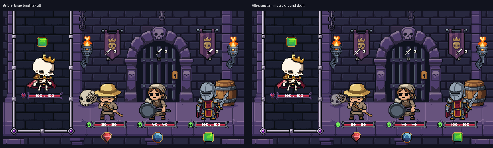
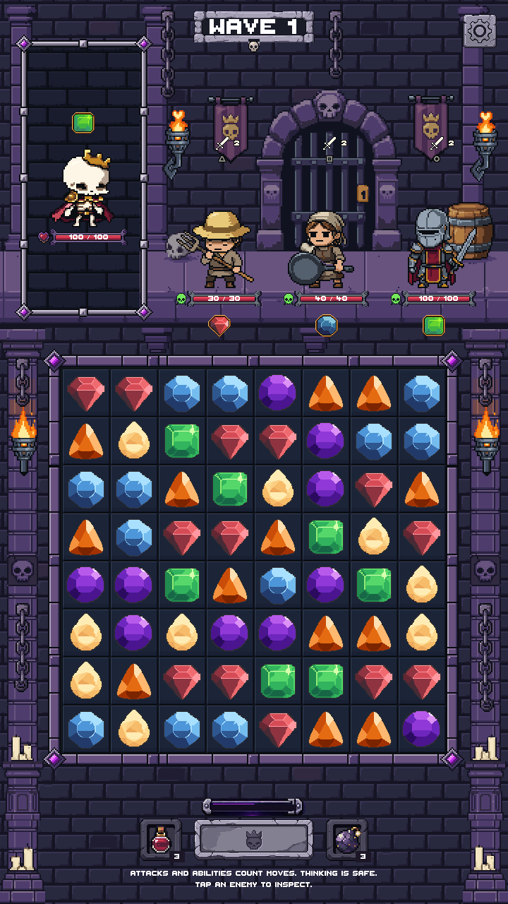
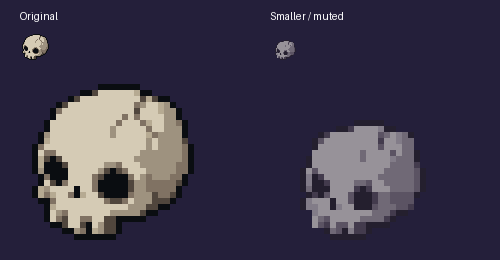

Actual production Game scene. The skull is about 23% smaller, with muted gray-violet bone colors and a tighter contact shadow. The full-width floor, characters, board, UI and gameplay remain unchanged.

Frozen before/after: zero changed pixels outside the skull and its contact shadow across five phone/safe-area layouts. Full floor/separator coverage checks and gameplay smoke checks passed.


Tall phone capture · Inset safe-area capture · Verification notes